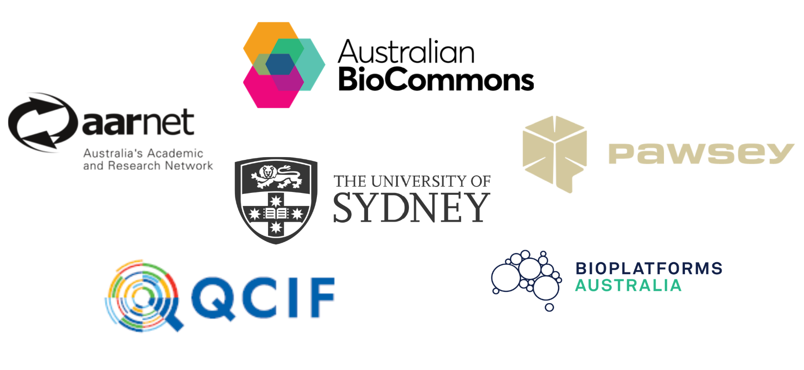

RNA-seq: reads to differential gene expression workshop series
This workshop series will introduce you to RNA sequencing data analysis for differential expression and functional enrichment on the command line. We will use the nf-core/rnaseq pipeline to process raw sequence reads to a gene count matrix and then perform differential expression and enrichment analyses with R/Rstudio.
Target audience
This workshop series is suitable for people who are familiar with working at command line interface and may be new to RNA-seq for differential expression analysis. The course is beginner friendly and intended for those interested in using the command line interface for their analysis. It is also suitable for those who want to learn about and use nf-co.re workflows.
Prerequisites
- Familiarity with Unix/Linux command line
- Familiarity with R/RStudio
Get the most out of this workshop
This workshop series is presented across 2 days and will consist of presentations, code-along sessions, and breakout sessions on both days. You’ll get the most out of the workshop if you:
- Brush up on your command line basics before Day 1
- Brush up on your R/Rstudio skills
- Watch our webinar introducing Pawsey’s Nimbus cloud and nf-core
- Set up your computer before Day 1
- Use the Slack channel to ask questions and engage in discussions during the workshop
- Do the provided challenge exercises during the workshop
Workshop schedule
| Lesson | Overview |
|---|---|
| Set up your computer | Follow these instructions to install a terminal application and web browser to be used in the workshop. |
| Introductory slides | Presentation summarising the essential theory behind RNA-sequencing experiments for differential expression, and an introduction to the workshop series. |
| Day 1: Raw sequence to gene counts | Part 1 of the two-part RNA sequencing workshop series is where participants will use nf.co.re’s rnaseq pipeline to transform raw sequencing data into analysis ready count data. |
| Day 2: Counts to genes and functional enrichments | Part 2 of the two-part RNA sequencing workshop series is where participants will use analysis ready raw count data generated in part 1 of the series to perform differential expression and enrichment analysis. |
| Summary slides | Presentation summarising the workshop series and how to interpret the results of our analysis. |
Course survey!
Please fill out our course survey before you leave! Help us help you! üòÅ
Credits and acknowledgements
Acknowledgements are an important way for us to demonstrate the value we bring to your research. Your research outcomes are vital for ongoing funding of the Sydney Informatics Hub and national compute facilities.
Suggested acknowledgements:
The authors acknowledge bioinformatics support and advanced computing resources provided by the Sydney Informatics Hub, a Core Research Facility at the University of Sydney, Pawsey Supercomputing Research Centre, Queensland Cyberinfrastructure Foundation (QCIF) and Australia’s National Research Education Network (AARNet) enabled through the Australian BioCommons (NCRIS via Bioplatforms Australia).

All materials copyright Sydney Informatics Hub, University of Sydney